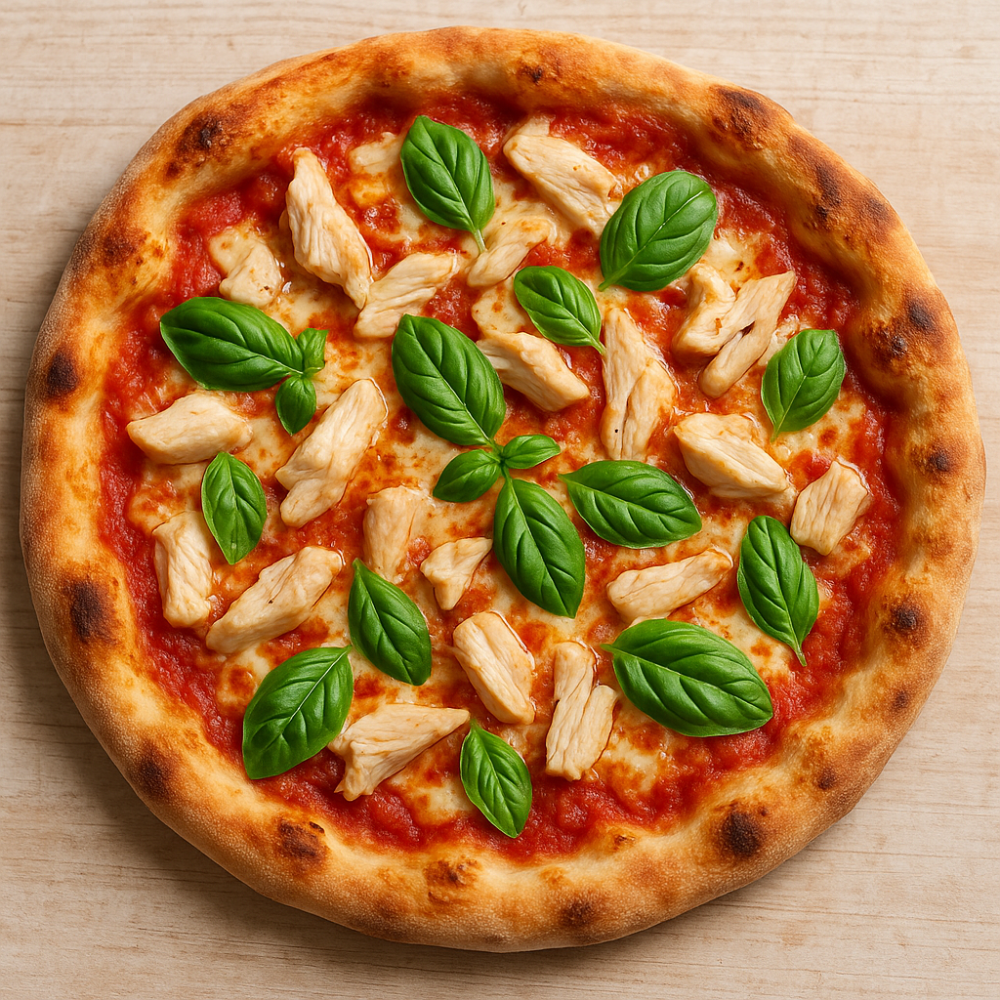

🍕 Homemade Italian-Style Chicken Pizza
Prep Time: 2 to 3 hours (including dough rising)
Yield: 2 medium pizzas (about 12 inches each)
A delightful Italian-style pizza featuring tender chicken, fresh mozzarella, and aromatic basil on a perfectly crispy homemade crust. This authentic recipe brings the taste of a Neapolitan pizzeria right to your kitchen.

Ingredients
Dough:
- 500g “00” flour (or strong bread flour)
- 325ml lukewarm water
- 10g sea salt
- 3g dry yeast (or 15g fresh yeast)
- 1 tbsp olive oil (optional)
Toppings:
- 200g cooked chicken breast, shredded or thinly sliced
- 250g fior di latte or fresh mozzarella, sliced and drained
- 150ml tomato passata or San Marzano crushed tomatoes
- 1 garlic clove, minced
- Fresh basil leaves
- Extra virgin olive oil
- Salt (to taste)
- Optional: Parmigiano-Reggiano, oregano, chili flakes
Instructions
- Make the Dough:
- Dissolve the yeast in a bit of lukewarm water; let sit 5–10 minutes until foamy.
- In a large bowl, mix flour and salt. Gradually add the yeast mixture and remaining water.
- Knead on a floured surface for ~10 minutes until smooth and elastic.
- Form a dough ball, place in a lightly oiled bowl, cover, and let rise 2 hours at room temp (or overnight in fridge).
- Prepare the Toppings:
- Season and cook chicken if raw; let it cool and shred or slice.
- Mix tomato passata with minced garlic, a pinch of salt, and a drizzle of olive oil.
- Preheat the Oven:
- Preheat oven to 250–280°C (480–550°F) with a pizza stone or steel, if available.
- Shape and assemble the Pizza:
- Divide dough into 2 equal balls.
- On a floured surface, stretch each into a 12-inch circle by hand (avoid rolling pins).
- Spread a thin layer of tomato sauce.
- Add mozzarella, chicken, and a few basil leaves.
- Drizzle with olive oil.
- Bake:
- Bake for 7–10 minutes (on a stone) or 12–14 minutes (on a baking tray) until crust is golden and cheese is bubbly.
- Finish and Serve:
- Garnish with fresh basil, Parmigiano shavings, and an olive oil drizzle.
- Serve hot.